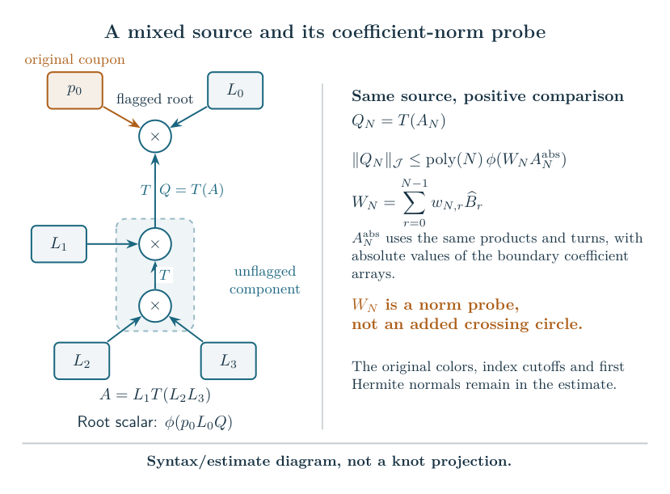

Companion research after the manuscript¶
The manuscript retains its completed-root theorem. The later companion proves the original invariant’s knot complement volume limit for every fixed strict literal Conway composition tree, including mixed flagged and unflagged junctions.
Every strict Conway tree¶
Start with type L leaves; turns exchange L and H and preserve A. The nonempty products are LL, LA, AA to A and HL, HA to H, with either order allowed. The cylindrical root pair must be AA, AL, AH or LH. This finite test is equivalent to the existence of the original strict source state.
For each fixed presentation there is a finite \(B(\tau)\). Every independently signed fixed integer twist tuple with \(|n_i|>B(\tau)\) at every leaf, and loop-free one-component pairing, has
The tree and weights are fixed before the limit, which includes all integer levels. Only the auxiliary crossing-circle cusps are filled; the main knot cusp remains unfilled.

The comparison probe is not an added crossing circle. The bound uses the component’s actual geometric action; the original expression retains its own marked representation and smooth filling completion.
The pointed quantum A-period¶
A genuine nonzero all-level ADO annihilator and finite fixed-color pointing were already constructed from the actual cut-state source. The new theorem therefore gives the volume limit directly for that operator’s selected companion-product period, evaluated as a whole quantum-parameter germ. Only a uniformly bounded jet order is required at singular steps. The exact full/reduced peripheral gauge is retained.
This does not identify the minimal operator’s selected classical geometric factor with the marked regulator module; that stronger interface remains open.
Earlier included classes¶
The weighted-tree theorem gives an explicit family with one independent integer weight at every vertex, arbitrary finite branching and unary chains, and the displayed literal closure. Its complete augmented volume is \(2v_{\mathrm{oct}}(H-1)\); the knot limit is the separately calibrated filled critical value.
The original completed-root manuscript, isolated closures of width at least three, and root stars remain included. The prior-source comparison records the earlier Fourier cancellation and one-hub all-odd belt overlap.
Scope¶
General arborescent presentation coverage, thresholds uniform over growing trees, arbitrary short weights and identification of the selected classical geometric factor remain open. Source identities do not imply tangle isotopy. These results have internal analytical reviews and reproducible supporting checks; they are not claims of external peer review.